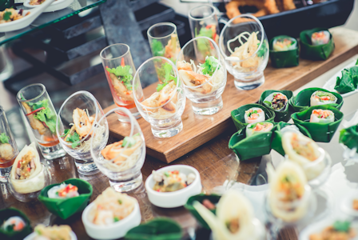

Catering
Since 2010, Curbside Thai has provided top-class catering for weddings and special events. We cover Charlotte and large regions of North Carolina with our mobile food truck, specially built for catering big events.
Meals are cooked hot and on the spot at your venue. Our experienced, uniformed catering crew provides professional service for events ranging from 50 to 300 guests. We will provide plates, linens, glassware, and other dining items upon request.
Curbside Thai is licensed for full bar service catering with a wide range of spirits, beer, and wine! Ask us about a custom drink menu for your wedding or private event. We also offer a variety of specialty Asian teas and drinks.
Impress your friends and co-workers with a Curbside Thai-catered event!